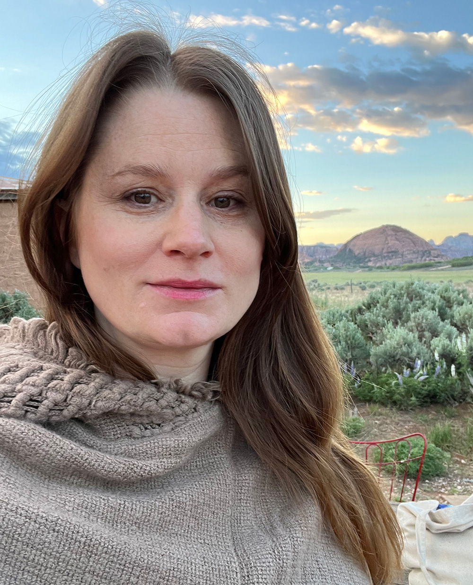

I’ve been exploring performance since I was five years old with my bright pink tutu, dancing and singing at the top of my lungs, in my living room to Paula Abdul’s, “Straight up now Tell Me.” Theater and performing have been a constant in my life ever since. I believe theater and the art heals. It gives us a platform to feel, express and be all parts of ourselves. I believe all people should have access to arts education and programming. I have experience and a passion for working with neurodiverse communities. My life’s goal is to provide creative experiences for others to find their own version of the “dancing tutu, Paula Abdul” joyful expression!
I grew up on the central coast of California and attended (PCPA) The Pacific Conservatory of the Performing Arts. It was there that my love for community based theatre began. Myself and fellow classmates produced and performed in our own production of the Vagina Monologues. We used the script as a guideline and from there we created our own movement, music, and art that we integrated into the performance. We spent rehearsals discussing our own experiences with girlhood, womanhood, insecurities, inequalities, and discriminations. We allowed ourselves to be as vulnerable with the audience as we were with each other. We used the performance as an opportunity to reach out to our community and donated to a nearby women’s shelter. From that performance on, I was changed, I knew that that was the type of art that I wanted to make. One that told stories that were personal yet universal; art that could be a force for change.

I graduated with a Bachelors of Fine Arts from Cornish College of the Arts in Seattle, WA. After graduating I was a part of creating an original works theatre company boom! Theatre from 2010 to 2017 producing shows in both Seattle and New York. In New York I graduated with a Masters in Arts in Applied Theatre from City University of New York Professional Studies Program. In New York I worked as a teaching artist and educator in public, private schools and non profit organizations. I’ve worked with early childhood all the way up to older adults. After the applied theatre program, I co-founded The Journey Theatre Project (JTP) with my fellow thesis practitioners. JTP has worked with non-profits, corporate entities, educational, religious and community organizations. Our work is to build equitable and inclusive environments using applied theatre. As a women led organization, we challenge traditional power structures, disrupt unconscious bias and strive to create spaces of belonging.
In 2020 during the Covid-19 Pandemic I started on a track to becoming a registered Drama Therapist through the North American Drama Therapy Association. I was inspired to receive this credential after my thesis work through the Applied Theatre program. I was interested in diving deeper into the therapeutic side of the use of drama and theatre. I wanted more trauma informed and psychology based training when working with vulnerable populations and really any population I was with. I also saw a need for more social and emotional work in schools, especially after going back to teaching after the pandemic.
I am the creator of allow the sun where I offer sessions that combine tarot and oracle cards with drama therapy and applied theatre. I also created allow imagination that focus on my drama therapy coaching sessions. I work both one on one and with groups.
After 11 years in New York City, my husband and I moved back to the Pacific Northwest to be closer to nature and to start a family. I am currently teaching preprimary drama at a private school in Bellevue, WA. I am working on connecting with different communities and organizations in the area to share my skills and passions with.
- Sark